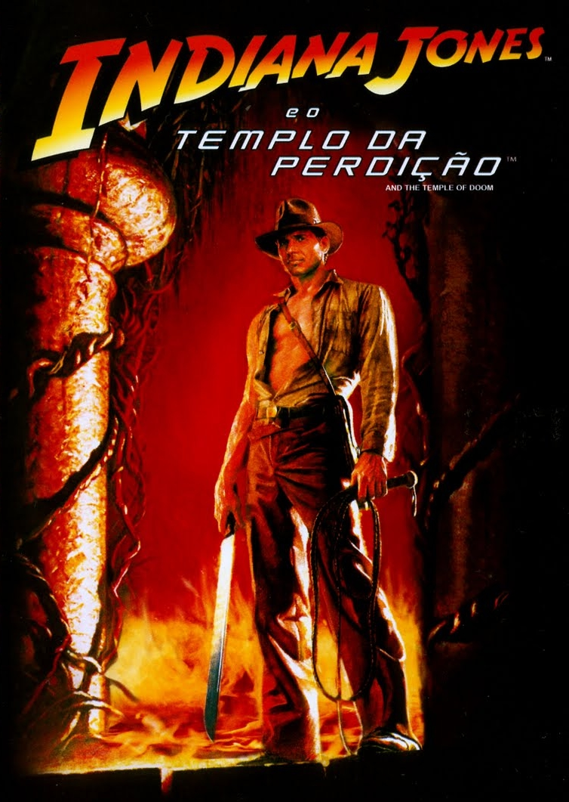
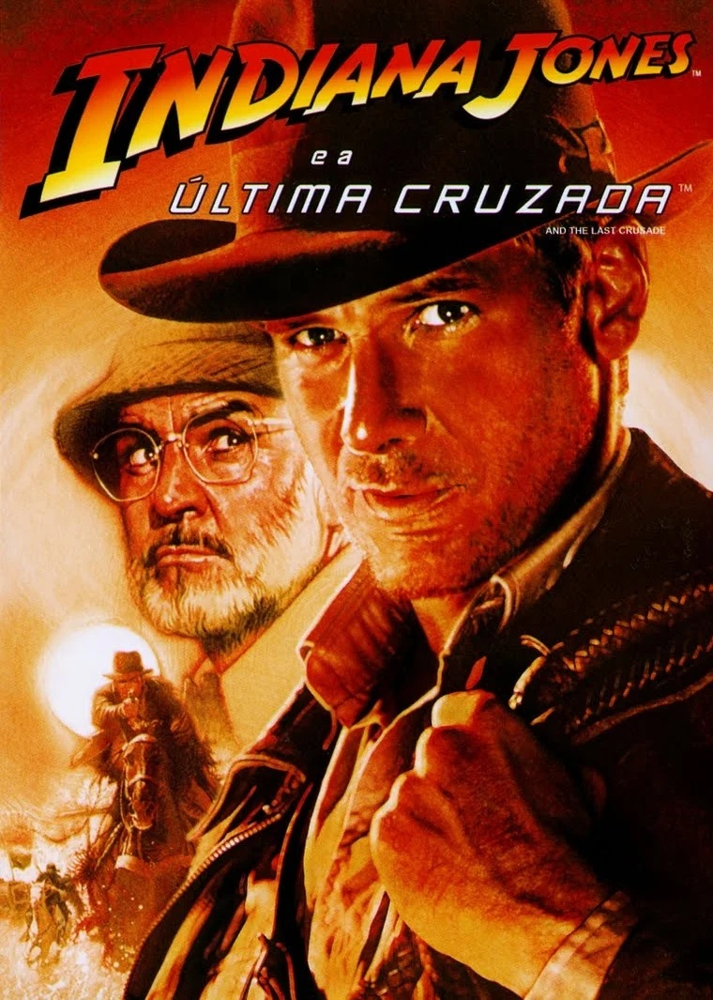

Indiana Jones é uma série de 5 filmes que teve seu
primeiro filme lançado nos anos 80, e terá seu quinto
filme lançado neste ano de 2023, quase quarenta anos
depois. O primeiro filme surpreendeu a todos com um
arqueólogo carismático e inteligente que tem medo de
cobras e é um verdadeiro herói Pulp nas telas do
cinema.
Já tivemos vários filmes do nosso intrépido herói, mas
uma coisa não mudou, Harrison Ford, o personagem principal
continua cativando a todos os que assistem seus filmes.
Produzido pela Lucas Film e dirigido por ninguém menos
que o próprio Steven Spielberg, é uma das maiores séries
do cinema.
Filmografia
1 - Indiana Jones e Os Caçadores da Arca Perdida (1981)
O primeiro filme a ser lançado na franquia mostra Indiana
Jones tentando impedir que o exército nazista do terceiro
reich encontre a Arca da Aliança, uma relíquia do mundo
antigo que teria poderes mágicos e poderia alterar o curso
da Segunda Guerra Mundial, que serve como pano de fundo para
a obra. O filme é uma clássica aventura em 4 atos e tem um
final surpreendente. O filme foi um sucesso de bilheteria,
com um orçamento de 20 milhões de dólares, e lucrou quase
390 milhões, e vale a pena assistir.
2. Indiana Jones e o Templo da Perdição (1984)
O primeiro filme de nossa lista na verdade é o segundo em
ordem de lançamento. Na verdade, este segundo lançamento do
filme de 1984 é uma prequel que mostra o nosso herói antes do
primeiro filme de grande sucesso lançado em 1981. Neste filme,
Indiana Jones sai em uma missão para resgatar uma pedra que
foi roubada por um feiticeiro na Índia e descobre uma mina
operada por crianças escravizadas e gerenciada por um culto
que realiza sacrifícios humanos. O filme recebeu o Oscar de
Melhores Efeitos Visuais em 1985, e é um dos melhores filmes
da sequência.

3. Indiana Jones ea Última Cruzada (1989)
No terceiro filme, de 1989, Spielberg dirigiu mais uma aventura
eletrizante do arqueólogo mais famoso das telonas. Neste filme,
Indiana Jones precisa combater os vilões do primeiro filme que
sequestraram seu pai, na tentativa de encontrar outra das grandes
relíquias bíblicas, o Santo Graal, que seria o cálice em que
Jesus teria tomado a Última Ceia e teria grandes poderes,
inclusive, sendo capaz de dar a imortalidade ao seu proprietário.
O filme recebeu o Oscar de Melhor Edição de Som,
e o Prêmio Hugo de Melhor Apresentação Dramática,
e rendeu impressionantes474 milhões de dólares.

4. Indiana Jones eo Reino da Caveira de Cristal (2008)
No filme que foi lançado 19 anos após o terceiro, Indiana Jones e
o Reino da Caveira de Cristal acontece anos após o filme anterior.
Durante a Guerra Fria. Como já era de se esperar, os inimigos da
vez são os Soviéticos, liderados pela vilã Irina Spalko, e querem
encontrar a relíquia que dá nome ao filme, a Caveira de Cristal,
que estaria na Floresta Amazônica.
Este filme mostrou para o fã verdadeiro de
Indiana Jones que valeu a pena esperar décadas
para ver a continuação da história do Arqueólogo.
5. Indiana Jones e o Chamado do Destino (2023)
O quinto e último filme na lista é Indiana Jones e o chamado do
Destino, que será lançado ainda em 2023.
Ainda não foram publicadas muitas informações sobre o filme,
mas diferente dos anteriores, não será dirigido
por Steven Spielberg, mas por James Mangold.
E se você é fã da saga, enquanto espera
pelo lançamento do próximo filme, além de
maratonar a sequência, na ordem que preferir, pode jogar Book
of Dead que é um dos melhores jogos de cassino
online, com uma trama similar a do Indiana Jones, um antropólogo
em busca grandes aventuras.